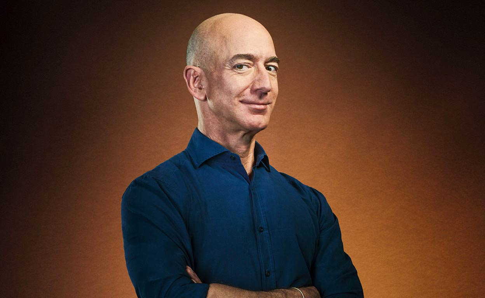

Bill Gates
Es un magnate empresarial, desarrollador de software, inversor, autor y filántropo estadounidense. Es cofundador de Microsoft, junto con su difunto amigo de la infancia Paul Allen.
- Empresas: Microsoft
- El correo electrónico (Outlook.com), almacenamiento y edición de archivos en línea (OneDrive), gestión de contactos, chats y otros servicios sociales y calendario. De algún modo se puede considerar el sucesor de Windows Live.

Mark Zuckerberg
Es un programador y empresario estadounidense, uno de los creadores y fundadores de Facebook y la red social homónima, y su actual presidente.
- Empresas: Meta
- Desarrolla tecnologías que ayudan a las personas a conectarse, encontrar comunidades y hacer crecer sus negocios. Estamos trascendiendo las pantallas 2D e incursionando en experiencias envolventes en el metaverso para dar forma a la próxima evolución de la tecnología social.

Jeff Bezos
Es un empresario, ingeniero y magnate estadounidense, fundador, presidente ejecutivo y exdirector ejecutivo de la empresa de venta en línea Amazon de la cual posee el 7%.En 2015 fue el quinto hombre más rico del mundo, y en 2017 alcanzó el primer puesto de la lista Forbes
- Empresas: Amazon
- Con variedad de productos, procesos simples de registro, compra y pagos, seguridad de datos, envíos gratuitos o de bajo costo, un programa de suscripción y entregas rápidas.


.jpg)